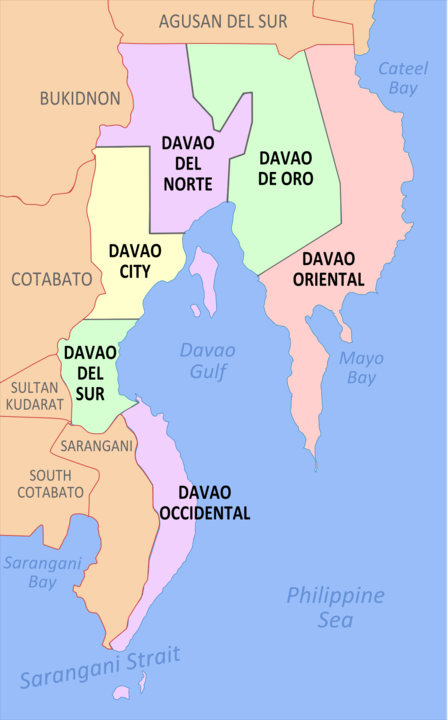
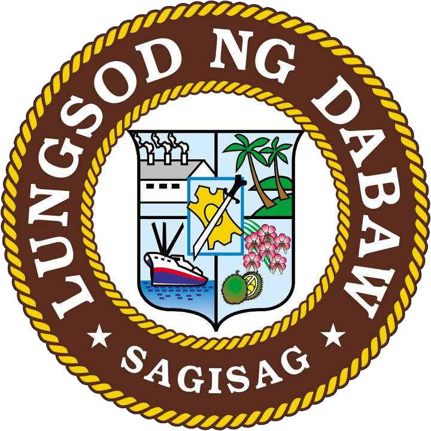
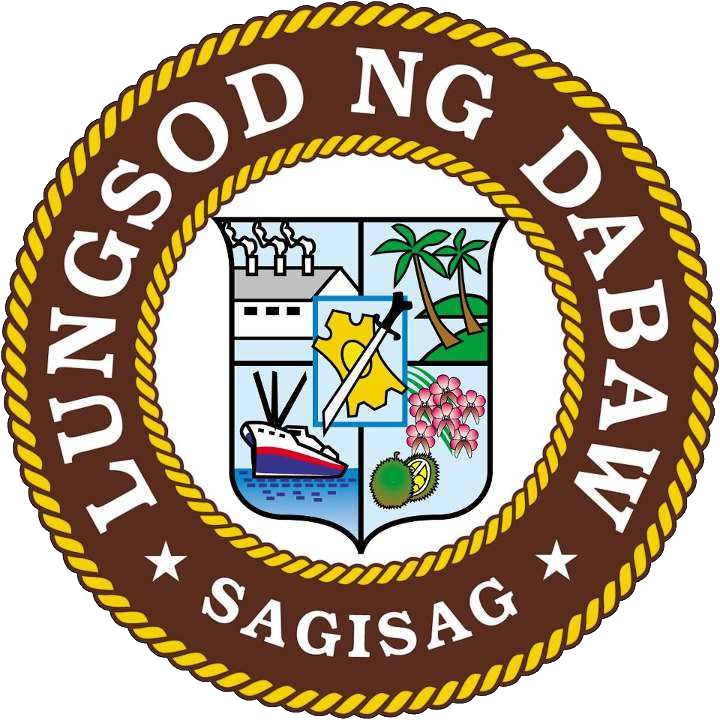

Davao City
Davao City, officially the City of Davao (Cebuano: Dakbayan sa Dabaw; Hiligaynon: Dakbanwa sang Davao; Filipino: Lungsod ng Dabaw), is a highly urbanized city in the Davao Region, Philippines. The city has a total land area of 2,443.61 km2 (943.48 sq mi), making it the largest city in the Philippines in terms of land area. It is the third-most populous city in the Philippines after Quezon City and Manila, and the most populous in Mindanao.According to the 2020 census, it has a population of 1,776,949 people.
Davao City Demographics
As of 2020 census, the city has a total population of 1,776,949 people.Metro Davao, with the city as its center, had about 2.77 million inhabitants in 2015, making it the third-most-populous metropolitan area in the Philippines and the most-populous city in Mindanao. In the 1995 census, the city's population reached 1,006,840 inhabitants, becoming the first city in the Philippines outside Metro Manila and the fourth nationwide to exceed one million inhabitants. The city's population increase during the 20th century was due to massive immigration waves coming from other parts of the nation and the trend continues to this day.
Davao City
 

Davao City History
The region's name is derived from its Bagobo origins, who are indigenous to the area. The word davao came from the phonetic blending of three Bagobo subgroups' names for the Davao River, a major waterway emptying into Davao Gulf near the city.
The Obos, who inhabit the hinterlands of the region, called the river Davah (with a gentle vowel ending, although later pronunciation is with a hard v or b); the Clatta (or Giangan/Diangan) called it Dawaw, and the Tagabawas called it Dabo.
To the Obos, davah also means "a place beyond the high grounds" (alluding to settlements at the mouth of the river surrounded by high, rolling hills).
Geography
Davao City is approximately 946 kilometres (588 mi) southeast of Manila over land, and 971 kilometres (524 nmi) by sea. The city is located in southeastern Mindanao, on the northwestern shore of Davao Gulf, opposite Samal Island.